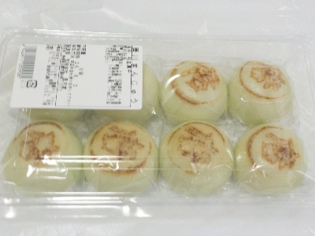

更新日 : 2026/05/31

唐川新茶まつりで唐川まんじゅうを買いました。
イベントで名前の入った商品はお土産に買いやすいです。お茶のイベントなのでお茶とセットで買うのが丁度いいって思いました。
普通に地元の有名な和菓子屋さんのものなので、滑らかな餡子が美味しかったです。
税込み500円でした。
【おいしいものを食べよう。】【たくさん寝よう。】
【ソロ活をしよう!】【季節感のあることをしよう。】【動画視聴はほどほどに。】【当サイトの全てのコンテンツは無断転載禁止です。】